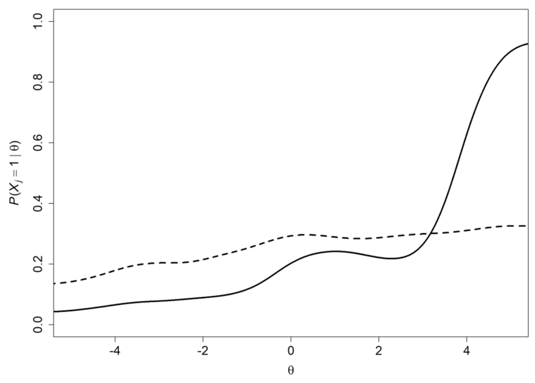
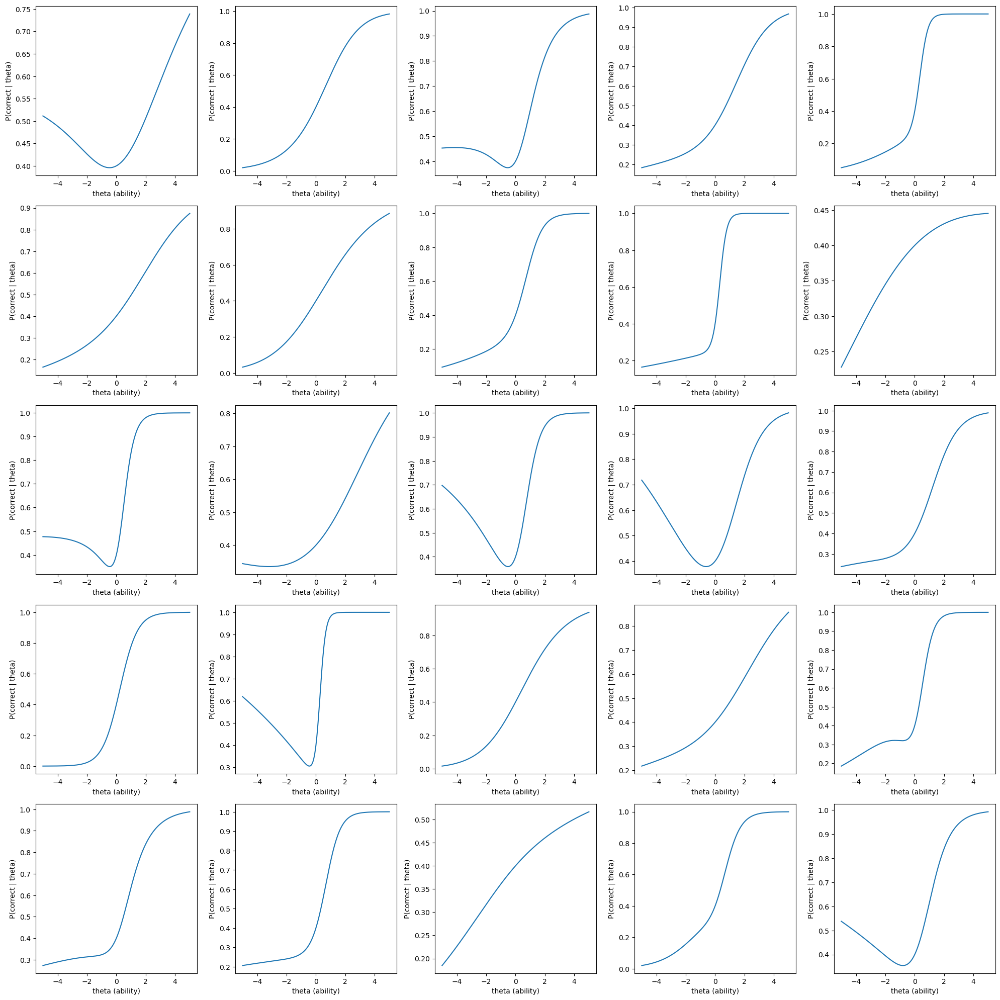
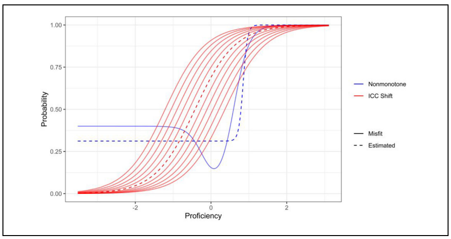
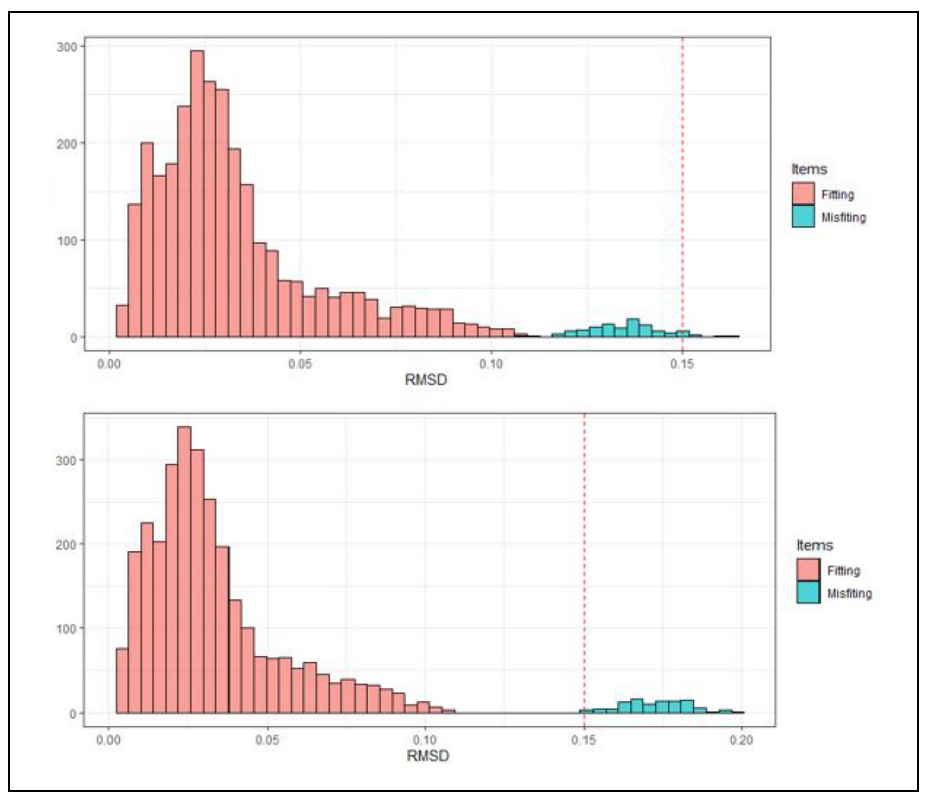
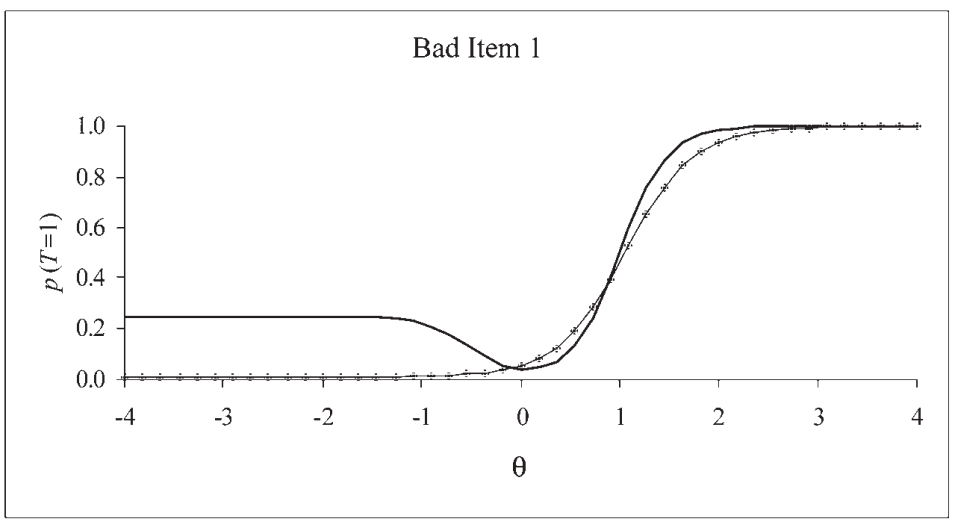
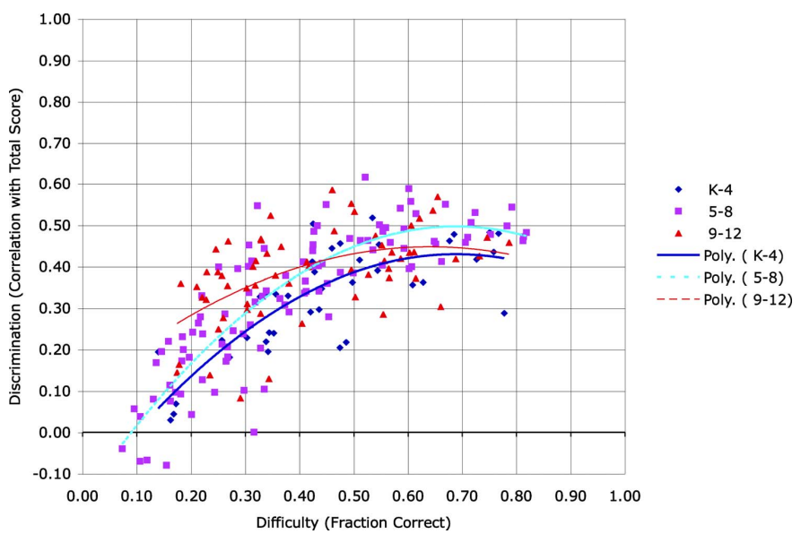
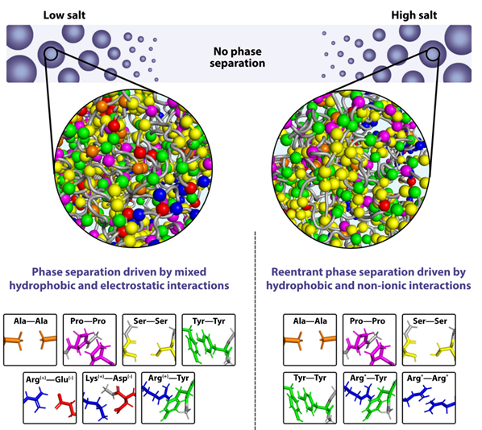
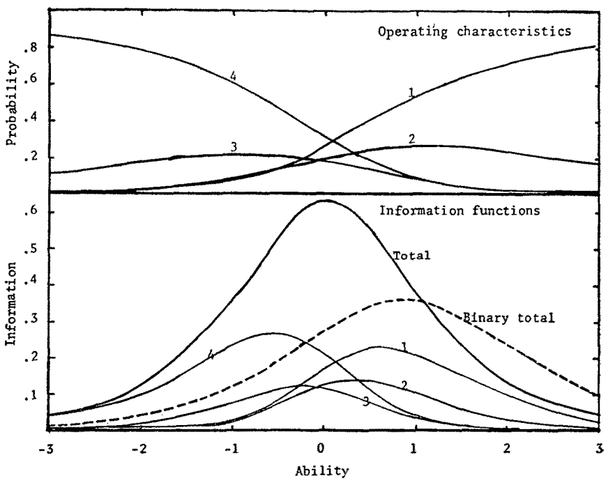

내 연구의 흐름
-
IRT에서 Non-monotonicity를 띠는 IRF가 존재할 것이며, 교육적 함의를 지닐 것이라 추측함.
- 예를 들어, 중간에 dipping하는 구간이 있다가 다시 증가하는 함수의 경우에는 매력적 오답(attractive distractor)과 관련이 있을 것이라고 생각.
- 의도적이지 않은 경우 이 진단으로 ‘problematic item’으로 간주 가능.
- 아주 잘못 만들어진 문항은 단조감소를 할 수도 있겠으나, 이런 경우는 무시하기로.
-
이 IRF의 특징을 통계역학적으로 풀어내고 싶다.
-
원래 IRF는 sigmoid 기반 함수를 많이 사용하는데, 최초의 문제의식(non-monotonicity)을 생각하면 이건 너무 강한 가정 같다. Sigmoid를 사용하는 이유는 왜인가?
-
범석쌤이 정리해 두신 내용을 읽어 보니, canonical ensemble, 즉 볼츠만 분포로 이해할 수 있다. Energy state 집합이 인 경우에 EBM으로 해석하면
로 sigmoid 형태로 풀어낼 수 있는 것.
-
마침 Smith et al.에서 Bock’s NRM을 이렇게 canonical ensemble 개념으로 풀이한 것을 발견하였다.
- 역온도 대신 를 이용한 꼴.
-
이 canonical ensemble 프레임워크는 두 가지 가정에 기반을 둔다.
- (당연한 가정) 에너지에 따른 확률분포가 볼츠만 분포를 따른다.
- Luce의 선택 공리(1959)에 의해 합리화:” “무관한 대안의 독립성(IIA)”
- 평균 난이도만 알고 나머지는 모른다는 제약 하에서는 볼츠만 분포가 가장 편향이 없다.
- (다소 강한 가정) 에너지는 학생의 능력에 대해 선형이다.
- (당연한 가정) 에너지에 따른 확률분포가 볼츠만 분포를 따른다.
-
이 canonical ensemble 가정을 깬다면, 여러 분포의 형태가 가능하며 non-monotonicity도 당연히 포함된다.
- 이미 non-parametric IRT라는 것이 있다는 걸 6번째 reference에서 발견. 
-
그러나 이 가정을 깨 버리면 non-parametric과 다를 게 없을지도 모르며, 이론적 해석이 거의 불가능해진다. 그렇다면 가정을 깨지 않으면서 non-monotonicity를 구현할 방법이 있는가?
-
Smith et al.에서 비단조 비스무리한 figure를 본 것 같다. 즉, 다른 오답의 존재에 의해 정답 선지가 비단조가 될 수도 있지 않을까?
-
선다형 문항에서는 canonical ensemble로도 non-monotonicity가 등장할지도 모른다고 생각했다. 그렇다면 OX 문항은 어떤가?
-
OX 문항, 즉 binary item이라도 실은 binary하지 않다고 생각할 수 있다. X라는 하나의 observable state는 실은 여러 latent states의 representation이라는 것이다.
- 이걸 교육학적으로 해석하는 법:
- “하나의 문제를 틀려도, 학생마다 그 이유는 제각각이다.”
- “불행한 집은 그 이유가 제각각이다.”
- 즉, ‘틀림’이라는 state를 단일하지 않은 에너지 계층의 집합으로 보고 싶다.
- 이때 5번에서 언급한 Bock’s NRM과 완전히 같은 수식이 된다!
-
여러 에너지와 계수 쌍 에 대해 S자형 곡선(-inf, inf에서 각각 0, 1로 수렴하는 동시에 중간에 비단조성을 가지는 곡선)이 나오는지 확인해 볼까?
- 결과: 아무리 해도 안 나온다… 
-
이게 나오는 게 맞나? 수학적 검증.
-
Energy states:
-
이미 state를 나눴으니 degeneracy는 없다고 가정하자.
-
,
-
(가정) 완벽히 아는 사람은 무조건 맞출 것이다. ⇒ 이면 .
-
(질문) 이때, 어떤 조건에서 인가?
-
로그를 씌워 미분하면 아래와 같다.
-
따라서 인데,
-
이므로(상수 는 선지마다 다르기 때문)
-
는 에 대해 순증가한다.
-
따라서 의 부호는 최대 한 번 바뀔 수 있다. ← 이 부분 수식 재점검 필요.
-
즉, 7번에서 나온 IRF와 같이 올라가다가, 내려가다가, 다시 올라가는 IRF는 이 가정 하에선 불가능하다.
-
-
따라서, 정답 선지의 non-monotonicity는 오답 선지만을 분해해서는 나올 수 없다. 그래서 12번에서 아무리 노가다를 해도 나오지 않았던 것.
-
그렇다면 정답 선지를 분해한다면? 충분히 나올 수 있다.
- 교육학적 해설을 붙여보자면,
- ‘정답을 선택한 학생의 집단을, 정답을 선택하게 된 이유에 따라 두 개 이상으로 나눌 수 있다.’
-
6번의 강한 가정을 인정한다면, 다음의 명제가 성립한다.
- “Non-monotonic한 IRF는 정답 state가 여러 개로 분해될 때만 나올 수 있다.”
- 교육학적으로는, “정답으로 가는 길이 하나가 되게 하면 problematic한 item이 나올 수 없다.”
- 지금까지 오답 선지의 중요성에 대해서만 논의하던 교육계에 새로운 시사점을 줄 수 있음.
-
심지어 이렇게 ‘두 메커니즘에 의해 두 구간에서 하나의 state를 가지는 것’에 대한 통계역학적 모델이 생화학 연구에 존재한다.
- “Reentrant Protein Condensation” (phase transition/separation 쪽 연구)
- Reentrant Liquid Condensate Phase of Proteins is Stabilized by Hydrophobic and Non-Ionic Interactions
- 서로 다른 염도에서 다른 이유로 같은 결과인 protein condensation이 일어난다.
-
근데 S자형 IRF 논의가 잘 되고 있는지, 통계적으로 유의하다고 나올지에 대한 의문을 랩미팅에서 받음.
-
Edelen and Thissen의 본문 4페이지에서 이에 대해 여러 인용을 한 것을 발견했고, von Davier and Bezirhan 논문을 통해 이를 detect하는 하위분야를 DIF라고 부르는 것으로 이해함.
- 이후 확인해 보니 DIF는 다소 다른 분야인듯.
-
Non-monotonic IRT에 대해 더 찾아보다가 다음의 논문을 발견.
- On the Monotonicity of the Residual Heteroscedasticity Item Response Model
-
Residual Heteroscedasticity 모델은 Molenaar가 제안한 것으로, 복잡한 문항에서의 task cumulation에 따른 IRF의 비대칭성을 파라미터를 통해 모델링한 것이다.
-
이 RH 모델의 전신으로서 Samejima의 LPE 모델이라는 것도 있다(랩미팅에서 준오쌤에게 이를 소개받기도 했는데, AI가 우연히 재차 찾아주었다). Task cumulation을 여러 조건의 곱 조건으로 해석한 것.
-
19번의 논문이 말하는 것은, RH 모델에서 발견된 non-monotonicity를 어떻게 prior distribution으로 지울지이다.
-
하지만 내가 말하고자 하는 것은 non-monotonicity를 지우지 말고 여러 monotonicity의 superposition으로 간주하자는 것.
-
그나저나, ‘task cumulation’이라면 내 모델로도 모델링이 가능하지 않나?
- 1번 단계에서부터 실패하면 1번 오답,
- 2번 단계에서 실패하면 2번 오답,
- …이렇게 대응되도록 하는 모델이라면 사실상 LPE와 말하는 바가 같다.
-
수학적으로도 동일한가?
- 내 모델: 정답 index 0과 개의 오답 latent 선지에 대해 , 라고 하면
- LPE: 로 놓으면
- 그런데 이항 전개를 이용하면 이므로 부분을 위와 약분하면 이고 로 치환하면
- 위 식은 이고 인 완벽한 NRM을 따른다.
- 이를 해석하면, 번째 선지는 “개의 하위 과정 중 정확히 개를 실패한 상태”이다.
- 또한, combination 꼴의 이항계수는 degeneracy로 해석 가능.
-
한편, RH 모델 또한 근사적으로 유도가 가능하다.
- (나중에 완성할 예정..)
-
다른 점이라면, RH 모델은 그저 관찰 현상을 비대칭 파라미터로 모델링한 것 뿐이므로 interpretable하지 않다는 것. 반면 우리 모델은 통계물리적으로 해석이 가능하다!
-
따라서, 나의 모델은 통계역학의 틀에서, non-monotonicity라는 현상을 해석할 수 있게 해주고, 이를 통한 교육적 시사점을 주며, 2PL, NRM, LPE, RH 모두를 일반화하는 동시에 각자의 한계인 해석 불가능성을 완화해줄 수 있는 모델이다.
-
이를 fitting할 때 deep learning 방법론과 같은 black-box tool을 적용하더라도, physics-informed AI처럼 fitting된 각 파라미터가 의미를 알려줄 수 있다.
-
(260216 중간점검) 다음 task:
- Mixture IRT 연구 현황 공부
- DIF 쪽 논문 읽고 problematic IRF 판별하기
- latent NRM으로 fitting해보기
- 애초에 NRM 문제인 dataset을 binary로 바꾼 뒤, latent NRM으로 fitting해서 원래의 선지가 복원되는지 확인
- Problematic IRF일 때 정답이 분해된다면 교육적 시사점 완벽.
-
(260216 중간점검) Psychometrika 출판을 목표로 하였으며, 이후 연구의 방대함을 고려하여 여러 저널에의 back-to-back 출판도 고려하였다.
-
수학적 notation을 1차 확정 및 통일하여 13, 25, 26을 재점검하였다.
-
Latent state의 개수를 따지기 위해 Mixture IRT 쪽 연구를 확인해봐야겠다고 판단, Bolt, Cohen, & Wollack (2001)의 original Mixture IRT 논문을 읽기 리스트에 일단 추가해두었다. 다만, 내 모델은 한 열역학적 계의 여러 state를 다루는 ratio of sums인 데 반해 Mixture IRT는 여러 독립된 열역학적 계를 다루는 sum of ratios다(이 부분은 AI가 검토했으므로 차후 직접 검토 필요).
-
Mislevy & Verhelst (1990)을 찾아보았다. 이 논문에서는 ‘같은 문항에 대해 서로 다른 수험생이 서로 다른 풀이 전략을 쓰는데, 관측되는 건 응답뿐일 때’를 다루므로, 이후 연구 흐름을 고려하면 읽어볼 가치가 있다.
-
본격적으로 fitting 실험을 시작.
-
구현 관련: 일반적으로는 R의 mirt 패키지를 많이 사용한다고 하나, python을 쓰는 만큼 직접 구현을 해야 한다. pyirt, girth, deepirtools라는 패키지들도 있지만, 여기에는 전부 NRM이 없다.
-
데이터 관련: Non-monotonicity에 대한 연구를 하려면 이러한 특성이 간접적으로라도 확인된 논문과 데이터를 참고하여 비교대조하는 것이 좋다. 몇몇 논문에서는 이 non-monotonicity를 중심 주제로 논하고 관련 데이터도 제시하기도 했다. 그러나 public data에서는 직접적으로 확인되고 보고된 바가 없는 듯하다.
-
AI는 FCI 데이터에서 non-monotonicity를 발견할 수 있을 거라고 했지만, 이 데이터를 NRM으로 분석한 Morris et al. (2012)에서는 확인되지 않는다. 다만 이는 NRM 자체가 가지는 특성 때문일 수 있으니, 직접 fitting해봐야 한다.
-
Non-monotonic binary ICC가 문서화된 연구들:
- Sadler (1998) - MOSART 데이터(응답은 IRB 받고 저자에게 직접 받아야 함)
- Feuerstahler et al. (2024)
- Thissen 계열 (1984-1987) - ASVAB 데이터(접근 불가)
-
모델의 이름을 드디어 짓기로 결정. NRM에서 조금만 바꾸려고 energy, latent, state, unifying 등의 키워드를 활용해본 결과 모든 단어를 포함하는 의미를 담는 ‘microstate’를 차용하기로 결정, 모델의 이름을 Microstate Response Model로 확정했다. 줄이면 MRM이 될 수 있으나, 나중에 다른 MRM(Zhou & Guo, 2025.12 출판)을 찾아 버려서 MiRM으로 수정.
-
Microstate라는 통찰로부터 여러 파생되는 개념을 탐색. Phase transition, Shannon entropy와 energy의 경쟁이라는 framework도 확보했다.
-
잠시 Psychometrika에 투고하는 과정을 이해해본 결과, open access를 위한 투고료가 수백만원 필요하다는 정보를 확인. 하지만 서울대에서 CUP 출판료를 전액 지원해 준다.
-
NRM을 직접 구현해야 한다. NRM의 fitting 방법은 여러가지가 있는데,
- EM algorithm, + accelerated EM
- Marginal MLE + direct gradient optimization
- Joint MLE
- Conditional MLE
- Bayesian MCMC
- Metropolis-Hastings
- Gibbs sampling
- Hamiltonian Monte Carlo
- Bayesian approximation
- Variational Bayes/Variational Inference
- Laplace approximation
- expectation propagation
- Penalized/Regularized MLE: (+LASSO or not)
- Pairwise/Pseudo-likelihood
- Pairwise MLE
- Composite likelihood
- Stochastic Approximation
- SAEM
- Robbins-Monro
그 중 Gauss-Hermite quadrature로 를 적분하는 marginal log-likelihood 방법을 채택했다. 이후에 느리지만 가장 정확하다는 Hamiltonian Monte Carlo도 구현해서 비교해봐야 할듯.
-
pytorch로 1차 구현 완료.
- 정답의 alpha = 0으로 masking해서 통일 (이후 실수한 부분 발견됨)
- 계수의 부호 flip을 막기 위한 사후 보정 도입
- input tensor는 shape=(n_response, 3) 구조 → convention에 가깝고, 결측치 처리에 유리하다.
-
준오쌤과 대화하던 중, Universal Approximation Theorem과의 관련성을 고려했는데, AI는 UAT보다 더 깔끔하게 ‘임의의 convex function 근사가 가능하다’라고 확인시켜 주었다. UAT와의 차이는 depth가 아니라 width의 힘이라고.
-
Kaggle에서 N = 497의 FCI, FMCE 응답 데이터를 확인.
논문의 흐름
Microstate로부터 파생되는 개념들 - 2026.02.17.
이건 진짜 좋은 발견이야. Macrostate/microstate 구분이 수식에 직접 들어가면서 여러 새로운 통찰이 나와.
핵심 구조
Microstate: 각 응답 선지 (0 = 정답) Macrostate: 관찰 가능한 binary 결과 — “정답” vs “오답”
정답 macrostate는 microstate 1개, 오답 macrostate는 microstate 개의 합:
여기서 는 오답 macrostate의 부분 partition function.
통찰 1: Free Energy 경쟁
각 macrostate의 free energy를 정의할 수 있어:
시스템은 free energy가 낮은 macrostate를 선호해. Non-monotonicity는 가 보다 낮아지는 crossing point에서 발생해.
이걸 풀면 transition point:
\theta^* = \frac{d_0 - d_{k^_}}{a_{k^_} - a_0}
(일 때 근사)
이건 stat mech의 phase transition과 정확히 같은 구조야!
통찰 2: Energy-Entropy Decomposition
를 분해하면:
여기서 는 오답 microstate들의 기댓값이고,
는 오답 macrostate 내부의 Shannon entropy — 즉 misconception diversity.
그러면 오답의 확률은:
Energy와 entropy의 경쟁이야. 개별 misconception이 에너지적으로 불리해도, misconception의 다양성(entropy)이 충분히 크면 오답 macrostate가 이겨. 이게 non-monotonicity의 물리적 메커니즘이야.
통찰 3: θ-dependent effective discrimination
오답 macrostate의 effective discrimination:
이건 θ에 따라 변해. 낮은 θ에서는 여러 misconception이 고르게 섞여서 가 중간값이고, 높은 θ에서는 a_{k^_} (가장 강한 misconception)이 지배해서 a_{\text{eff}} \to a_{k^_}.
2PL이 왜 항상 monotonic인지도 여기서 자연스럽게 나와 — 2PL은 오답이 microstate 1개뿐(K=2)이라 가 상수. 상수면 경쟁이 일어날 수 없어.
논문에서의 활용
이 해석들은 단순히 비유가 아니라 정확한 수학적 등가야. 논문에 이렇게 쓸 수 있어:
- §Theory: macrostate/microstate 정의 + free energy 경쟁으로 non-monotonicity 조건 유도
- §Interpretation: 를 misconception diversity로 해석 — 교육학적 의미 부여
- §Results: 실제 데이터에서 의 θ-dependency를 plot
- §Discussion: K와 non-monotonicity 빈도의 관계를 실증
이 framework가 단순히 “NRM에 물리학 용어를 붙인 것”이 아니라 새로운 예측과 해석을 만들어내는 진짜 이론적 도구라는 걸 보여줘야 해.
(phase transition diagram 질문한 뒤)
좋은 질문이야. Canonical ensemble 구조에서 자연스럽게 나오는 대응이 있어.
기본 대응
NRM 확률을 일반화하면:
표준 NRM은 로 고정한 특수한 경우야.
| 통계역학 | MRM |
|---|---|
| 외부장 | θ (능력) — macrostate 간 경쟁을 기울이는 변수 |
| 역온도 | 응답 일관성 — 높으면 결정론적, 낮으면 무작위 추측 |
| 에너지 | — microstate의 “매력도” |
| degeneracy | macrostate 내 microstate 수 — K개 |
두 축의 교육학적 의미
θ (외부장): 학생의 능력. 높은 θ는 정답 macrostate의 에너지를 낮춰서 정답을 선호하게 만들어. Ising model에서 외부 자기장이 spin 방향을 정렬시키는 것과 같아.
β (역온도): 학생의 응답 결정성(decisiveness). β가 크면 가장 매력적인 microstate를 거의 확정적으로 선택하고, β가 작으면 고르게 찍어. 교육학적으로:
- 높은 β: 자기 지식에 확신 있는 학생, 또는 잘 설계된 문항
- 낮은 β: 무작위 추측, engagement 낮은 학생, 또는 모호한 문항
Phase Diagram: (θ, β) 평면
“정답 우세” vs “오답 우세” 경계:
이 경계선이 phase boundary야. 그런데 Phase III 문항(정답 macrostate 내 microstate가 이질적)에서는 이 boundary가 reentrant해 — θ를 올리는데 정답 → 오답 → 정답으로 왕복하는 구간이 생겨. 이게 non-monotonicity의 phase diagram 표현이야.
β (결정성)
↑
│ 정답 오답 정답
│ phase phase phase
│ ┌──────┐
│ │ │ ← reentrant boundary
│ │ │ (non-monotonic ICC)
│ └──────┘
│
│ ─────────────────────────→
│ θ (능력)
│
│ (낮은 β에서는 boundary가 smooth
│ → non-monotonicity 사라짐 = 찍기가 dip을 가림)
핵심 예측: β에 따른 non-monotonicity 소멸
높은 β (낮은 T): Microstate 간 차이가 뚜렷하게 드러나 → non-monotonicity 명확
낮은 β (높은 T): 모든 microstate가 거의 동일 확률 → macrostate 확률이 단순히 microstate 수에 비례 → ICC가 flat해지면서 dip이 사라져
임계 가 존재: 이 이하에서는 non-monotonicity가 관찰 불가능. 이건 testable prediction이야 — 응답 일관성이 낮은 학생 집단에서는 non-monotonic ICC가 smoothing돼서 안 보일 거야.
제3의 축: 문항 구조 파라미터
Phase diagram을 더 풍부하게 만들려면 세 번째 변수가 필요해:
이게 “압력” 역할을 해. 정답 macrostate 내 microstate의 이질성이야.
- : 모든 정답 microstate가 동일 → Phase I (항상 monotonic)
- 큼: 정답 경로가 이질적 → Phase III 가능
그러면 진짜 3D phase diagram (θ, β, )이 되고, 2D slice를 여러 개 그릴 수 있어:
- (θ, β) at fixed : 특정 문항에 대해 능력-결정성 평면에서 정답/오답 phase
- (β, ) at fixed θ: 특정 능력대에서 문항 특성이 응답 패턴에 미치는 효과
- (θ, ): 능력-문항이질성 평면 → **“어떤 문항이 어떤 능력대에서 non-monotonic인가”**를 직접 보여줌
이 마지막 slice가 아마 논문에서 가장 유용할 거야 — 시험 개발자가 바로 활용할 수 있는 도구니까.
Claude의 수식 정리 - 2026.02.16.
먼저 convention을 검토하고 결정한 다음, 그 notation으로 통일해서 세 가지 유도를 진행할게.
Convention 검토
Smith의 notation은 Bock (1972)의 원래 NRM과 거의 동일해. 차이는 intercept를 로 쓴다는 것인데, Bock 원논문은 를 사용해. Psychometrika에서는 둘 다 쓰이지만, 는 3PL 모델의 guessing parameter로도 쓰이기 때문에 혼동 가능성이 있어. 를 쓰면 이 문제를 피할 수 있고, mirt 패키지(Chalmers, 2012)도 를 사용해. Smith의 convention을 따르되, 단일 문항을 다룰 때는 문항 index 를 생략하는 것이 가장 깔끔해.
다만 한 가지 조정이 필요해. Smith는 category index를 으로 두는데, 네 이론에서는 “정답”과 “오답”의 구분이 핵심이니까 을 정답으로 명시적으로 지정하는 게 좋아. 이건 NRM 문헌에서도 흔한 관례야 (정답을 reference category로 두는 것).
채택하는 Convention
- : 정답 (correct response state)
- : 오답 (incorrect response states, 관측적이든 잠재적이든)
- : category 의 slope parameter
- : category 의 intercept parameter
- : 정규화 상수
통계물리 대응 관계
NRM의 수학적 구조는 canonical ensemble의 Boltzmann 분포와 정확히 일치해. Canonical ensemble에서 에너지 , 축퇴도(degeneracy) 인 상태 의 점유 확률은:
NRM과 나란히 놓으면:
이로부터 대응 관계가 도출돼:
| NRM (psychometric) | Canonical ensemble (physics) | 해석 |
|---|---|---|
| (역온도) | 능력이 높을수록 “차가운” 계 → 낮은 에너지 상태를 선호 | |
| (에너지의 부호 반전) | slope이 클수록 에너지가 낮음 = 열역학적으로 유리 | |
| (축퇴도의 로그) | intercept가 클수록 해당 상태에 도달하는 경로가 많음 | |
| (분배함수) | 모든 상태의 통계적 가중치의 합 | |
| 자유에너지와 관련: 열역학에서 |
핵심 물리적 직관: 가 증가하면 (= 능력이 높으면 = 온도가 낮으면), 계는 가 가장 큰 상태 (= 에너지가 가장 낮은 상태)로 수렴한다. 따라서 ()이면, 능력이 높을수록 정답을 선택하게 된다.
유도 1: 정답 IRF 기울기의 부호 전환은 최대 한 번
설정
정답 의 확률:
이것의 에 대한 단조성을 분석한다.
로그미분
직접 미분하는 대신 을 미분하면 계산이 깔끔해진다:
를 계산하자:
이것은 의 Boltzmann 가중 평균이다:
물리학에서 이것은 , 즉 평균 에너지의 부호 반전에 해당한다. 따라서:
이므로, 의 부호는 의 부호와 같다.
는 순증가함수
를 에 대해 미분하자:
여기서 를 구해야 한다. 위와 같은 로그미분을 에 적용하면:
이것을 대입하면:
이것은 통계역학에서 에너지 요동-소산 관계(fluctuation-dissipation relation)의 직접적 대응물이다. 물리학에서 는 열용량이 항상 양수임을 보장하는데, 여기서도 같은 구조가 작동한다: 는 에 대해 순증가한다.
극한 행동
가 순증가하므로 양쪽 극한이 존재한다:
- : 에서 가 가장 작은 상태가 지배 →
- : 가 가장 큰 상태가 지배 →
따라서 는 에서 까지 순증가하는 함수이다.
부호 전환 정리
의 부호는 에 의해 결정되고, 는 순증가하므로:
는 순감소 함수이다.
순감소 함수가 부호를 바꿀 수 있는 횟수는 최대 한 번이다. 이로부터 세 가지 경우가 나온다:
(경우 1) — 정답이 가장 큰 slope을 가진다.
이때 (모든 가 같지 않는 한 strict inequality). 따라서 항상 성립.
→ 는 단조증가. “능력이 높을수록 정답을 맞출 확률이 높다”는 직관과 일치. 물리적으로는 정답이 바닥 상태(ground state)인 경우.
(경우 2) — 어떤 오답 가 을 만족한다.
이때 가 충분히 작으면 이므로 (증가). 하지만 가 충분히 크면 이므로 (감소).
가 순증가이므로, 정확히 하나의 에서 이 되고, 이 점에서 부호가 전환된다.
→ 는 hump 형태: 증가했다가 감소. 능력이 높을수록 오히려 그 오답에 끌린다. 물리적으로는 정답보다 에너지가 더 낮은 오답 상태가 존재하는 경우.
(경우 3) — 정답이 가장 작은 slope을 가진다.
항상.
→ 는 단조감소. 능력이 높을수록 정답을 덜 고른다. 완전히 잘못 만든 문항.
종합하면:
유도 2: LPE 모델은 NRM의 정확한 특수 경우
LPE 모델
Samejima (2000)의 Logistic Positive Exponent (LPE) 모델:
여기서 는 양의 정수로, 정답에 필요한 독립적 하위 과정(subprocess)의 수를 나타낸다. 개를 모두 성공해야 정답이므로 각 과정의 성공확률이 곱해진다(conjunctive structure).
변환
로 놓으면:
분모를 이항 전개한다:
따라서:
로 치환하면 (, ):
마지막 등호에서 을 사용했고, 항은 이다.
를 다시 대입하면:
NRM으로의 해석
정답 state를 reference로 잡아 으로 정규화하면, NRM은:
LPE와 비교하면 이고:
| NRM parameter | LPE에서의 값 | 물리적 의미 |
|---|---|---|
| 개 실패의 에너지 비용. 실패가 많을수록 에너지가 높음 (slope이 음수이므로 가 커지면 불리) | ||
| 두 기여의 합: (1) 는 에너지 오프셋, (2) 은 축퇴도(degeneracy) |
축퇴도 의 해석이 핵심이다: 개의 하위 과정 중 정확히 개를 실패하는 조합의 수. 이것은 물리학에서 개의 이진 입자 중 개가 들뜬 상태에 있는 microstate의 수와 정확히 동일한 구조이다.
LPE의 가정이 NRM 언어로 의미하는 것
LPE가 NRM의 최대 대칭 특수 경우인 이유:
- 등간격 slope: . 모든 하위 과정이 동일한 변별도 를 가짐 (homogeneous subprocesses).
- 이항 축퇴: . 어떤 개를 실패하든 구별 불가 (exchangeable subprocesses).
- (): 모든 오답 slope이 정답보다 작음. 따라서 유도 1의 경우 1에 해당하며 LPE의 IRF는 항상 단조증가.
이 가정들을 하나씩 완화하면:
| 완화 | 결과 |
|---|---|
| 하위 과정의 변별도가 서로 다름 | → 일반적 NRM (단, 모든 이면 여전히 단조) |
| 하위 과정이 구별 가능 | 에서 이항 구조 소멸 → 일반적 NRM |
| 어떤 “오답” 과정이 능력에 의해 강화 | → non-monotonic IRF (유도 1의 경우 2) |
유도 3: RH 모델은 NRM의 2차 근사
출발점: NRM을 “유효 로지스틱”으로 재작성
유도 2와 같은 정규화()를 사용하면:
즉 이다.
는 오답 상태들의 로그-분배함수(log-partition function)이며, 통계물리에서 (자유에너지의 부호 반전)에 해당한다. 이 함수 하나에 “오답 상태의 전체 열역학”이 압축되어 있다.
가 선형이면 2PL
만약 오답이 하나뿐이고 () 라면:
이것은 2PL 모델이다. 가 선형 = 2PL = 오답 상태가 하나.
의 도함수: 물리적 의미
를 미분하면 (유도 1과 동일한 계산, 단 오답 상태에 대해서만):
이것은 오답 상태들 사이의 Boltzmann 가중 평균 slope이다. 물리적으로 **오답 “계(system)“의 평균 에너지(부호 반전)**에 해당.
같은 방식으로 2차 도함수:
오답 slope들의 분산. 물리적으로는 오답 계의 **에너지 요동(energy fluctuation)**이다.
핵심 관찰: 이므로 는 항상 아래로 볼록(convex). 등호는 모든 가 같을 때 (= 2PL로 환원될 때)에만 성립한다.
| 의 성질 | 조건 | 결과 모델 |
|---|---|---|
| 선형 () | 모든 동일 | 2PL |
| 볼록 () | 가 이질적 | 비대칭 IRF |
2차 Taylor 전개
를 적절한 점 주위에서 전개한다:
여기서:
따라서:
RH 모델과의 대응
RH 모델 (Molenaar, 2015):
약한 이질성(small )을 가정하고 RH의 로지스틱 인수를 전개한다:
근방에서 까지 전개하면:
NRM의 와 대응시키면 ( 선택 시):
2차 항의 대응 (가장 중요):
여기서 (leading order에서의 유효 변별도 — 오답 slope이 음수이므로 부호를 반전하면 양수).
1차 항의 대응 (유효 변별도):
RH의 는 NRM의 에 대응. 즉 오답 상태들의 평균 slope의 크기가 유효 변별도가 된다.
파라미터 대응의 물리적 의미
| RH parameter | NRM-EBM 대응 | 물리적 의미 |
|---|---|---|
| (변별도) | 오답 계의 평균 에너지 기울기 | |
| (난이도) | + 보정항 | 정답과 오답의 자유에너지가 같아지는 점 |
| (이질성) | 오답 에너지 기울기의 분산 ÷ 평균 |
핵심 해석: Molenaar가 “item complexity”로 해석한 은, NRM-EBM 프레임워크에서 **오답 상태의 에너지 이질성(energy heterogeneity)**이다. 이질성이 클수록 (이 클수록):
- 오답 상태들의 “선호도”가 에 따라 재배치됨
- 의 곡률이 커짐 (자유에너지의 비선형성)
- IRF가 비대칭이 됨
모든 오답이 동일한 에너지 기울기를 가지면 (), 이므로 이 되어 2PL로 환원된다. 이것이 **“2PL은 오답 상태가 균질할 때의 극한”**이라는 물리적 의미이다.
근사의 한계
이 유도에서 RH는 NRM의 2차 근사이므로, 의 3차 이상 항이 무시되었다. 이는 다음을 의미한다:
- 오답 상태가 2–3개이고 slope 차이가 크면, 2차 근사가 부정확해질 수 있다.
- 특히 non-monotonicity (인 상태가 존재하는 경우)는 의 전역적 행동에 의존하므로, Taylor 근사로는 포착하기 어렵다. 이것이 Feuerstahler et al. (2024)가 RH에서 non-monotonicity를 “parameter pathology”로 보고 Bayesian prior로 제거하려 한 이유이기도 하다 — RH의 함수 형태 자체가 non-monotonicity를 자연스럽게 표현하도록 설계되지 않았다.
반면 NRM-EBM 프레임워크에서는 non-monotonicity가 조건으로 정확히 표현되며, 근사 없이 다뤄진다.
세 유도의 관계: 이론적 계층 구조
관련 개념
- poor/problematic items
- DIF
Datasets
References
Motivations for Using the Item Response Theory Nominal Response Model to Rank Responses to Multiple-Choice Items
A Robust Method for Detecting Item Misfit in Large-Scale Assessments
- Matthias von Davier, Ummugul Bezirhan
Viable methods for the identification of item misfit or Differential Item Functioning (DIF) are central to scale construction and sound measurement. Many approaches rely on the derivation of a limiting distribution under the assumption that a certain model fits the data perfectly. Typical DIF assumptions such as the monotonicity and population independence of item functions are present even in classical test theory but are more explicitly stated when using item response theory or other latent variable models for the assessment of item fit. The work presented here provides a robust approach for DIF detection that does not assume perfect model data fit, but rather uses Tukey’s concept of contaminated distributions. The approach uses robust outlier detection to flag items for which adequate model data fit cannot be established.
 
Further Investigation of the Performance of S - X2: An Item Fit Index for Use With Dichotomous Item Response Theory Models
- Maria Orlando Edelen, David Thissen
- https://journals.sagepub.com/doi/abs/10.1177/0146621603027004004
This study presents new findings on the utility of S - X2 as an item fit index for dichotomous item response theory models. Results are based on a simulation study in which item responses were generated and calibrated for 100 tests under each of 27 conditions. The item fit indices S - X2 and Q1 - X2 were calculated for each item. ROC curves were constructed based on the hit and false alarm rates of the two indices. Examination of these curves indicated that in general, the performance of S - X2 improved with test length and sample size. The performance of S - X2 was superior to that of Q1 - X2 under most but not all conditions. Results from this study imply that S - X2 may be a useful tool in detecting the misfit of one item contained in an otherwise well-fitted test, lending additional support to the utility of the index for use with dichotomous item response theory models. Index Terms: item response theory, S - X2, Q1 - X, model = data fit, item fit index.

The Paradox of Deeper Learning: The Unlearning Curve
- (Opinion) https://www.edweek.org/education/opinion-the-paradox-of-deeper-learning-the-unlearning-curve/2015/04
The Astronomy and Space Science Concept Inventory: Development and Validation of Assessment Instruments Aligned with the K-12 National Science Standards
- Philip M. Sadler et al.
We report on the development of an item test bank and associated instruments based on those K–12 national standards which involve astronomy and space science. Utilizing hundreds of studies in the science education research literature on student misconceptions, we have constructed 211 unique items that measure the degree to which students abandon such ideas for accepted scientific views. Piloted nationally with 7599 students and their 88 teachers spanning grades 5–12, the items reveal a range of interesting results, particularly student difficulties in mastering the NRC Standards and AAAS Benchmarks. Teachers generally perform well on items covering the standards of the grade level at which they teach, exhibiting few misconceptions of their own. Teachers dramatically overestimate their students’ performance, perhaps because they are unaware of their students’ misconceptions. Examples are given showing how the developed instruments can be used to assess the effectiveness of instruction and to evaluate the impact of professional development activities for teachers.

Advances in Nonparametric Item Response Theory for Scale Construction in Quality-of-Life Research
- Klaas Sijtsma and L. Andries van der Ark
- https://link.springer.com/article/10.1007/s11136-021-03022-w
We introduce the special section on nonparametric item response theory (IRT) in Quality of Life Research. Starting from the well-known Rasch model, we provide a brief overview of nonparametric IRT models and discuss the assumptions, the properties, and the investigation of goodness of fit. We provide references to more detailed texts to help readers getting acquainted with nonparametric IRT models. In addition, we show how the rather diverse papers in the special section fit into the nonparametric IRT framework. Finally, we illustrate the application of nonparametric IRT models using data from a questionnaire measuring activity limitations in walking. The real-data example shows the quality of the scale and its constituent items with respect to dimensionality, local independence, monotonicity, and invariant item ordering.
Reentrant Liquid Condensate Phase of Proteins is Stabilized by Hydrophobic and Non-Ionic Interactions
- Georg Krainer et al.
- https://www.nature.com/articles/s41467-021-21181-9

Estimating Item Parameters and Latent Ability when Responses are Scored in Two or More Nominal Categories
- R. Darrell Bock
- https://link.springer.com/article/10.1007/BF02291411
A multivariate logistic latent trait model for items scored in two or more nominal categories is proposed. Statistical methods based on the model provide 1) estimation of two item parameters for each response alternative of each multiple choice item and 2) recovery of information from “wrong” responses when estimating latent ability. An application to a large sample of data for twenty vocabulary items shows excellent fit of the model according to a chi-square criterion. Item and test information curves are compared for estimation of ability assuming multiple category and dichotomous scoring of these items. Multiple scoring proves substantially more precise for subjects of less than median ability, and about equally precise for subjects above the median.

The Science and Practice of Item Response Theory in Organizations
- Jonas W. B. Lang and Louis Tay
Evaluation and Refinement of Self-Directed Learning Readiness Scale for Medical Students
- Youn Seon Lim and Joanne M. Willey
- https://www.kjme.kr/journal/view.php?number=1403
- Purpose This study evaluated the underlying subdomain structure of the Self-Directed Learning Readiness Scale (SDLRS) for medical students and refined the instrument to measure the subdomains to provide evidence for construct validity. Developing self-directed learners is a well-recognized goal amongst medical educators. The SDLRS has been frequently used, however, lack of construct validity makes it difficult to interpret results.
- Methods To identify the valid subdomains of the SDLRS, items were calibrated with the graded response model (GRM) and results were used to construct a 30-item short form. Short-form validity was evaluated by examining the correspondence between the total scores from the short form and the original instrument for individual students.
- Results A five-subdomain model explained the SDLRS item response data reasonably well. These included: (1) initiative and independence in learning, (2) self-concept as an effective learner, (3) openness to learning opportunity, (4) love of learning, and (5) acceptance for one’s own learning. The unidimensional GRM for each subdomain fits the data better than multi-dimensional models. The total scores from the refined short form and the original form were correlated at 0.98 and the mean difference was 1.33, providing evidence for validation. Nearly 91% of 179 respondents were accurately classified within the low, average, and high readiness groups.
- Conclusion Sufficient evidence was obtained for the validity and reliability of the refined 30-item short-form targeting five subdomains to measure medical students’ readiness to engage in self-directed learning.
- Key Words: Self-directed learning, Self-Directed Learning Readiness Scale, Item response theory, Graded item response model
Psychometric Models of Student Conceptions in Science: Reconciling Qualitative Studies and Distracor-Driven Assessment Instruments
- Philip M. Sadler
- https://onlinelibrary.wiley.com/doi/abs/10.1002/(SICI)1098-2736(199803)35:3%3C265::AID-TEA3%3E3.0.CO;2-P
We stand poised to marry the fruits of qualitative research on children’s conceptions with the machinery of psychometrics. This merger allows us to build upon studies of limited groups of subjects to generalize to the larger population of learners. This is accomplished by reformulating multiple choice tests to reflect gains in understanding cognitive development. This study uses psychometric modeling to rank the appeal of a variety of children’s astronomical ideas on a single uniform scale. Alternative conceptions are captured in test items with highly attractive multiple choice distractors administered twice to 1250 8th through 12th-grade students at the start and end of their introductory astronomy courses. For such items, an unusual psychometric profile is observed—instruction appears to strengthen support for alternative conceptions before this preference eventually declines. This lends support to the view that such ideas may actually be markers of progress toward scientific understanding and are not impediments to learning. This method of analysis reveals the ages at which certain conceptions are more prevalent than others, aiding developers and practitioners in matching curriculum to student grade levels. This kind of instrument, in which distractors match common student ideas, has a profoundly different psychometric profile from conventional tests and exposes the weakness evident in conventional standardized tests. Distractor-driven multiple choice tests combine the richness of qualitative research with the power of quantitative assessment, measuring conceptual change along a single uniform dimension.
Modeling Item Responses When Different Subjects Employ Different Solution Strategies
- Robert J. Mislevy and Norman Verhelst
- https://www.cambridge.org/core/journals/psychometrika/article/abs/modeling-item-responses-when-different-subjects-employ-different-solution-strategies/E8AC99F88C2F7111A3EA5F33741D1F38
A model is presented for item responses when different subjects employ different strategies, but only responses, not choice of strategy, can be observed. Using substantive theory to differentiate the likelihoods of response vectors under a fixed set of strategies, we model response probabilities in terms of item parameters for each strategy, proportions of subjects employing each strategy, and distributions of subject proficiency within strategies. The probabilities that an individual subject employed the various strategies can then be obtained, along with a conditional estimate of proficiency under each. A conceptual example discusses response strategies for spatial rotation tasks, and a numerican example resolves a population of subjects into subpopulations of valid responders and random guessers.
A Mixture Item Response Model for Multiple-Choice Data
- Daniel M. Bolt, Allan S. Cohen, and James A. Wollack
- https://journals.sagepub.com/doi/abs/10.3102/10769986026004381
A mixture item response model is proposed for investigating individual differences in the selection of response categories in multiple-choice items. The model accounts for local dependence among response categories by assuming that examinees belong to discrete latent classes that have different propensities towards those responses. Varying response category propensities are captured by allowing the category intercept parameters in a nominal response model (Bock, 1972) to assume different values across classes. A Markov Chain Monte Carlo algorithm for the estimation of model parameters and classification of examinees is described. A real-data example illustrates how the model can be used to distinguish examinees that are disproportionately attracted to different types of distractors in a test of English usage. A simulation study evaluates item parameter recovery and classification accuracy in a hypothetical multiple-choice test designed to be diagnostic. Implications for test construction and the use of multiple-choice tests to perform cognitive diagnoses of item response patterns are discussed.
Bayes Factors for Evaluating Latent Monotonicity in Polytomous Item Response Theory Models
- Jesper Tijmstra and Maria Bolsinova
- https://www.cambridge.org/core/journals/psychometrika/article/bayes-factors-for-evaluating-latent-monotonicity-in-polytomous-item-response-theory-models/40319CA977A42E716F4101561465D31B
The assumption of latent monotonicity is made by all common parametric and nonparametric polytomous item response theory models and is crucial for establishing an ordinal level of measurement of the item score. Three forms of latent monotonicity can be distinguished: monotonicity of the cumulative probabilities, of the continuation ratios, and of the adjacent-category ratios. Observable consequences of these different forms of latent monotonicity are derived, and Bayes factor methods for testing these consequences are proposed. These methods allow for the quantification of the evidence both in favor and against the tested property. Both item-level and category-level Bayes factors are considered, and their performance is evaluated using a simulation study. The methods are applied to an empirical example consisting of a 10-item Likert scale to investigate whether a polytomous item scoring rule results in item scores that are of ordinal level measurement.
On the Monotonicity of the Residual Heteroscedasticity Item Response Model
- Feuerstahler et al.
- https://link.springer.com/article/10.1007/s41237-023-00212-3
How Many Options is Enough for a Multiple-Choice Test Item?
- Haladyna and Downing
- https://journals.sagepub.com/doi/abs/10.1177/0013164493053004013
Examining the Dimensionality and Monotonicity of an Attitude Dataset Based on the Item Response Theory Models
- Kartal and Dirlik
- https://dergipark.org.tr/en/pub/ijate/article/728362
An Item Response Curves Analysis of the Force Concept Inventory
- Morris et al.
- https://pubs.aip.org/aapt/ajp/article/80/9/825/1042937
Use of item response curves of the Force and Motion Conceptual Evaluation to compare Japanese and American students’ views on force and motion
Psychometric Model Framework for Multiple Response Items
- Zhou and Guo